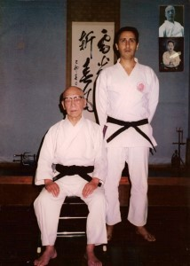

¿Qué es F.I.K.A.?
Federación Itosu Karate Do Argentina no es una organización “comercial”. fue fundada en la ciudad de Bahía Blanca el 6 de Julio de 1989 con la denominación de “Federación Itosu Kai Argentina”, con el fin de nuclear a todos los difusores del Estilo Itosu Kai en el país.

El 27 de Abril de 1990 es designada por el Maestro Saadaki Sakagami, en representación de su padre El Gran Maestro Ryusho Sakagami, como entidad rectora y custodia de los lineamientos técnicos de Estilo Itosu Kai en la República Argentina. Por su trabajo social la Municipalidad de Bahía Blanca la reconoce como entidad de Bien Público en 1991.
Se mantiene una estrecha relación con la sede central en Japón hasta Octubre de 2020, cuando tras la renuncia y alejamiento del maestro Daniel Rodolfo Dodero, del ahora denominado Itosu Ryu, todos los integrantes de la Federación deciden continuar caminando por el sendero de Ankoh Itosu con la dirección técnica del maestro Daniel Rodolfo Dodero y cambiar la denominación a Federación Itosu Karate Do Argentina. La Federación es abierta para todos los que pertenecieron a FIKA o simplemente les guste el karate tradicional.-
Referencia: Visite la WEB Oficial de F.I.K.A.